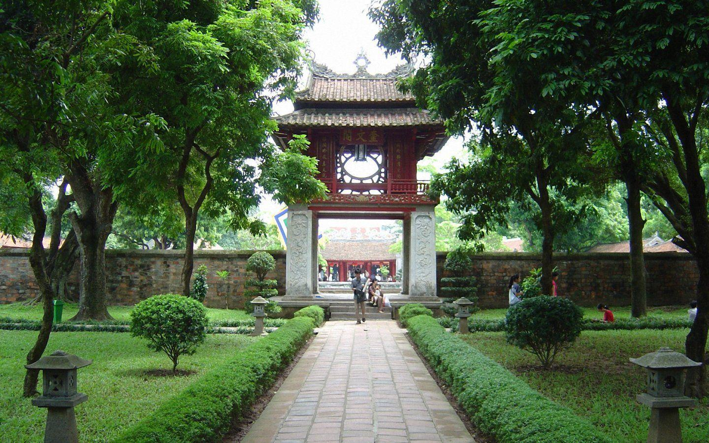

Miền Bắc
Nét đẹp cổ kính – núi rừng hùng vĩ – văn hoá sâu sắc.
Ảnh

5 ĐỊA ĐIỂM NỔI BẬT
Hà Nội (Hồ Gươm)
Hà Nội là trái tim văn hoá của Việt Nam với nhịp sống vừa cổ kính vừa hiện đại. Khu vực Hồ Gươm được xem như “phòng khách” của thủ đô: sáng sớm có người đi bộ, tập thể dục; chiều tối rộn ràng phố đi bộ, âm nhạc và ẩm thực đường phố. Xung quanh hồ là các công trình gắn với lịch sử như Tháp Rùa, đền Ngọc Sơn, cầu Thê Húc. Dạo phố cổ, bạn dễ bắt gặp những con ngõ nhỏ, mái nhà rêu phong và những hàng quán lâu đời. Hà Nội hợp cho người thích khám phá văn hoá, chụp ảnh, thưởng thức bún chả, phở, cà phê trứng và cảm nhận một thành phố “có hồn”.
Sa Pa
Sa Pa nổi tiếng với khí hậu mát lạnh, mây mù lãng đãng và ruộng bậc thang trải dài theo sườn núi. Đây là điểm đến lý tưởng để “đổi mood” khỏi đô thị: sáng săn mây, trưa khám phá bản làng, chiều ngắm hoàng hôn trên đỉnh đèo. Bạn có thể trải nghiệm văn hoá dân tộc tại các bản như Cát Cát, Tả Van; thưởng thức đặc sản như thắng cố, lẩu cá hồi, đồ nướng. Nếu thích trekking, Sa Pa còn có các cung đường đẹp hướng về Fansipan hoặc những triền núi phủ xanh. Vẻ đẹp Sa Pa nằm ở sự hoang sơ, yên bình và cảm giác đứng giữa núi rừng rộng lớn.
Hà Giang
Hà Giang là “thiên đường” cho những ai mê cung đường đèo và cảnh quan hùng vĩ. Nơi đây có cao nguyên đá Đồng Văn, đèo Mã Pí Lèng, sông Nho Quế xanh ngọc và những bản làng ẩn mình giữa núi đá. Mỗi mùa Hà Giang lại mang một màu riêng: mùa hoa tam giác mạch, mùa lúa vàng, mùa mận đào nở rộ. Du lịch Hà Giang không chỉ là ngắm cảnh mà còn là trải nghiệm văn hoá vùng cao: chợ phiên, trang phục truyền thống, ẩm thực đậm đà. Nếu muốn một chuyến đi đáng nhớ, nhiều cảm xúc, Hà Giang luôn là lựa chọn “đi một lần nhớ cả đời”.
Vịnh Hạ Long
Vịnh Hạ Long là kỳ quan thiên nhiên với hàng nghìn đảo đá vôi nhô lên giữa mặt nước xanh biếc. Trải nghiệm đẹp nhất là đi du thuyền: ngắm cảnh hoàng hôn, khám phá hang động, chèo kayak len qua các vịnh nhỏ và làng chài. Mỗi góc nhìn ở Hạ Long đều “cinematic” — trời xanh, mây nhẹ và những khối núi đá tạo hình độc đáo. Ngoài tham quan, bạn có thể thử hải sản tươi, check-in các điểm nổi tiếng và tận hưởng không khí biển. Hạ Long phù hợp cả du lịch gia đình lẫn đi cùng bạn bè vì vừa thư giãn vừa có nhiều hoạt động.
Ninh Bình
Ninh Bình được ví như “Hạ Long trên cạn” nhờ hệ thống núi đá vôi, sông nước và cánh đồng xanh mướt. Tràng An, Tam Cốc – Bích Động là những điểm nổi bật với trải nghiệm ngồi thuyền len qua hang động và ngắm cảnh yên bình. Ngoài ra, Ninh Bình còn có chùa Bái Đính, cố đô Hoa Lư và nhiều góc nhìn đẹp từ các đỉnh núi. Nơi đây hợp cho người thích chụp ảnh, yêu thiên nhiên và muốn tìm sự thư thái. Một chuyến đi Ninh Bình thường không quá vội: cứ chậm rãi, hít thở không khí trong lành và tận hưởng vẻ đẹp giản dị mà cuốn hút.